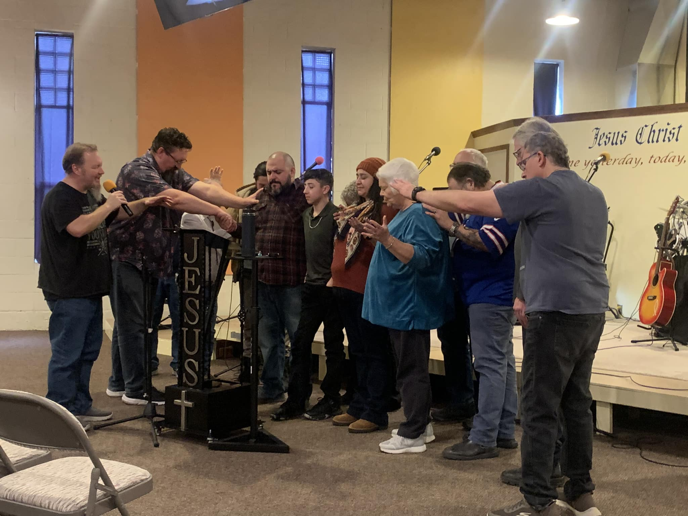
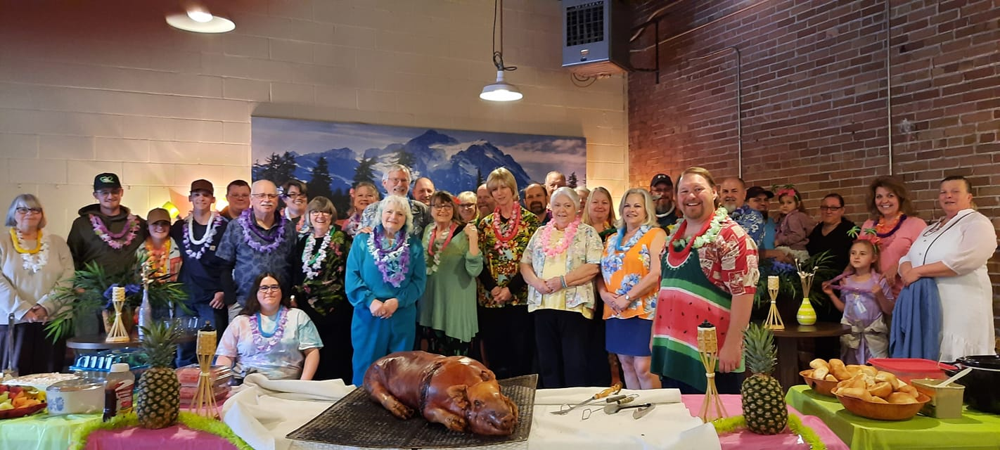

Who Are We?
A Church Centered on Jesus, People, and Community
We are a group of people from different backgrounds brought together to worship Jesus. We come together for friendship, accountability, support, and outreach.
Plan a Visit
Our Heart
At Rock Church, we want to be a place where people can come as they are, grow in their faith, and walk through life with others who genuinely care. We believe church is more than a service on Sunday — it is a family learning to follow Jesus together.
Whether someone has known God for years or is just beginning to ask questions, we want them to find hope, truth, and real community here.
What You’ll Find Here

Pastor
Pastor Jason Frakes
Pastor Jason Frakes has been the pastor of The Rock Church for 18 years now. Up until 2020 he worked at a local shop dealing with conveyor belts and bearings, where he worked for 25 years.
He has been married to his wife, Cherise, for 29 years and has two boys, Cademen (23) and Cameron (21).
He is a man whose love and passion for God is evident in all he does. He preaches with a style that is all his own — usually in shorts. He also enjoys disc golf and plays every chance he gets.
For Families
We love families and want church to be a place where parents, kids, and individuals of every age can grow. Sunday mornings include nursery and children’s church, and we want parents to know they are supported here.
Come As You Are
You do not need to have everything together to walk through our doors. We are people who need grace, and we believe Jesus meets people where they are and changes lives from the inside out.
We’d Love to Meet You
Whether you’re looking for a church home, visiting for the first time, or just curious, you are welcome here.